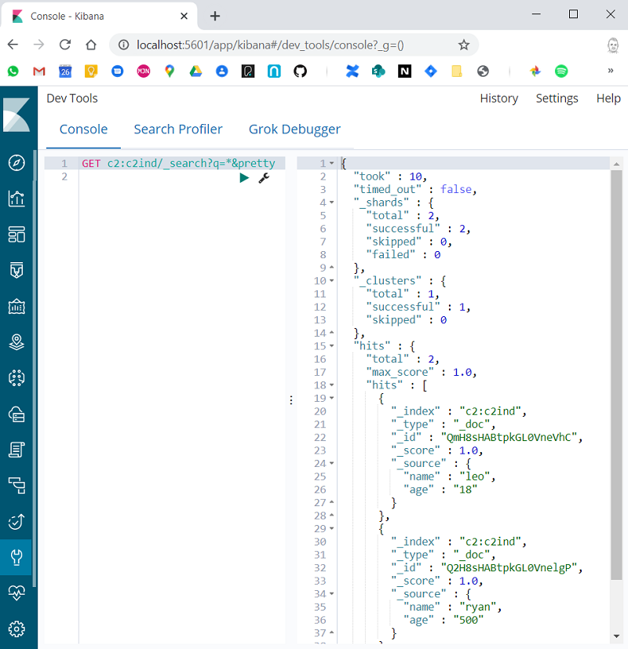

Elasticsearch
Using Kibana With 2 Or More Elasticsearch Clusters
Create 2 Elasticsearch Clusters and a Kibana Instance
Using docker containers, I created 2 ES clusters, each with 2 nodes - 4 containers in total. I created a 5th container for Kibana.
> docker ps -a
CONTAINER ID IMAGE COMMAND PORTS NAMES
0cd08909c412 elasticsearch:6.8.7 "/usr/local/bin/dock" 0.0.0.0:9200->9200/tcp, 0.0.0.0:9300->9300/tcp esc1n1
b30174d5bd04 elasticsearch:6.8.7 "/usr/local/bin/dock" 0.0.0.0:9201->9201/tcp, 0.0.0.0:9301->9301/tcp esc1n2
5fce5511c9b8 elasticsearch:6.8.7 "/usr/local/bin/dock" 0.0.0.0:9250->9250/tcp, 0.0.0.0:9350->9350/tcp esc2n1
e9384eda5c56 elasticsearch:6.8.7 "/usr/local/bin/dock" 0.0.0.0:9251->9251/tcp, 0.0.0.0:9351->9351/tcp esc2n2
2fb6e89d9dfb kibana:6.8.7 "/usr/local/bin/kiba" 0.0.0.0:5601->5601/tcp kibana
esc1n1 = elasticsearch, cluster 1, node 1.
See below for the Docker Compose script for creating these containers.
Adding Some Data
I created an index in each cluster and added some accurate data. (I have a utility script es - the operations are fairly clear).
Cluster 1
> es createindex c1ind 2 0
(done)
> es addentry c1ind '{"name":"martin","age":"21"}'
(done)
> es addentry c1ind '{"name":"stelios","age":"51"}'
(done)
> es listindexes
health status index pri rep docs.count docs.deleted store.size pri.store.size
green open .kibana_1 1 0 4 0 14.4kb 14.4kb
green open .kibana_task_manager 1 0 2 0 12.5kb 12.5kb
green open c1ind 2 0 4 0 12kb 12kb
(3 lines)
Cluster 2
> es createindex c2ind 2 0
(done)
> es addentry c2ind '{"name":"leo","age":"18"}'
(done)
> es addentry c2ind '{"name":"ryan","age":"500"}'
(done)
> es listindexes
health status index pri rep docs.count docs.deleted store.size pri.store.size
green open c2ind 2 0 2 0 8kb 8kb
(1 lines)
Configure Cross Cluster Search
Next I configure cross cluster search. Kibana connects to cluster 1 so I add cluster 2 as a remote cluster to cluster 1.
Cluster 1
The remote cluster is given the label c2.
> es generic '_cluster/settings { "persistent":{"cluster":{"remote":{"c2":{ "seeds":["esc2n1:9350"]}}}}}'
(done)
Run a Cross Cluster Search From Kibana
Next I switch to Kibana and run a cross cluster query. To query an index on the remote cluster we prefix it with the cluster label c2. To query the index c2ind I use c2:c2ind.

Docker Compose - Elasticsearch and Kibana Creation Script
version: '2.2'
services:
esc1n1:
image: docker.elastic.co/elasticsearch/elasticsearch:6.8.7
container_name: esc1n1
environment:
- cluster.name=esc1
- bootstrap.memory_lock=true
- "ES_JAVA_OPTS=-Xms512m -Xmx512m"
- http.port=9200
- transport.tcp.port=9300
ulimits:
memlock:
soft: -1
hard: -1
ports:
- 9200:9200
- 9300:9300
networks:
- esnet
esc1n2:
image: docker.elastic.co/elasticsearch/elasticsearch:6.8.7
container_name: esc1n2
environment:
- cluster.name=esc1
- bootstrap.memory_lock=true
- "ES_JAVA_OPTS=-Xms512m -Xmx512m"
- "discovery.zen.ping.unicast.hosts=esc1n1"
- http.port=9201
- transport.tcp.port=9301
ulimits:
memlock:
soft: -1
hard: -1
ports:
- 9201:9201
- 9301:9301
networks:
- esnet
esc2n1:
image: docker.elastic.co/elasticsearch/elasticsearch:6.8.7
container_name: esc2n1
environment:
- cluster.name=esc2
- bootstrap.memory_lock=true
- "ES_JAVA_OPTS=-Xms512m -Xmx512m"
- http.port=9250
- transport.tcp.port=9350
ulimits:
memlock:
soft: -1
hard: -1
ports:
- 9250:9250
- 9350:9350
networks:
- esnet
esc2n2:
image: docker.elastic.co/elasticsearch/elasticsearch:6.8.7
container_name: esc2n2
environment:
- cluster.name=esc2
- bootstrap.memory_lock=true
- "ES_JAVA_OPTS=-Xms512m -Xmx512m"
- "discovery.zen.ping.unicast.hosts=esc2n1"
- http.port=9251
- transport.tcp.port=9351
ulimits:
memlock:
soft: -1
hard: -1
ports:
- 9251:9251
- 9351:9351
networks:
- esnet
kibana:
image: docker.elastic.co/kibana/kibana:6.8.7
container_name: kibana
environment:
- ELASTICSEARCH_URL=http://esc1n1:9200
ports:
- "5601:5601"
networks:
- esnet
networks:
esnet: